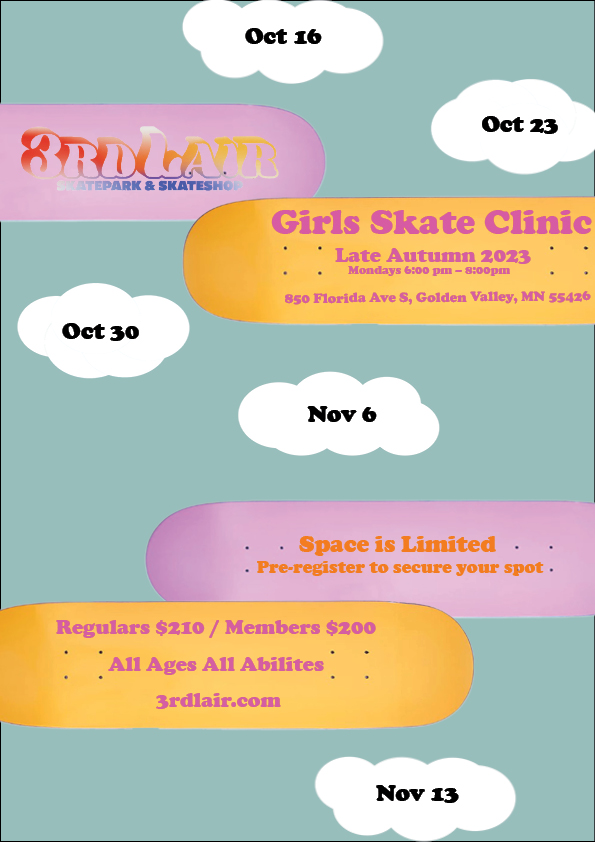

Contrast, Alignment, Repetition and Proximity
First Poster Layout 1

First Poster Layout 2
For this first poster layout, I went for quite a minimalistic look in order to get the information across to the viewer. I began by taking an Adobe stock image of a female skateboarder, which I edited in PhotoShop to appear hand drawn. Then I imported it into InDesign to create the poster itself.
In the initial layout I contrasted the typeface of the dates to the typeface of the rest of the text to make them stand out. I also used contrasting colours, white on black and transitioning from white text to black text. However, using white text on top of a pink background didn't provide the contrast I wanted so I opted to change all the text to be black in the final version.
The use of repetion in this poster is the the bold font on what I deemed the most important elements, the title, the price and the website. This does also play into contrast as the rest of the text is regular font but all from the same typeface family.
I already had a solid idea on how I wanted to align the poster as soon as I saw the original photograph of the skateboarder. I wanted to use her pointing hand as a way to draw the readers attention to as specific point on the poster where I would put some of the most important information. By utilizing alignment, I transformed the company's logo to resemble graffiti on the skate ramp, which also aligns with the consistent use of proximity. I grouped related items together, such as the event name, location, and when it's taking place; pricing details; the web address; and information about available space.
Even though I am happy with this poster and like the aesthetic of it, I do feel as though I missed the mark in showcasing proper use of repetition.
Second Poster First Draft

Since the previous poster was lacking in repitition I decided to impliment the use of repeating skateboards and clouds as backgrounds for the text.
Second Draft
In the first draft I didn't like my initial use of alignment and proximity as it didn't really flow well and the grouping didn't really make much sense. In this second draft of the poster the dates are grouped with the clouds and flow from top to bottom in calendar order. I stacked the skateboards in a way that guides the reader through what the poster is trying to tell them.
Final Layout

In the final layout of my second poster, I added some autumnal-coloured falling leaves repeating throughout, as none of my designs so far conveyed autumn, which is the time of year this skateboarding class is scheduled to take place. They also contribute to the contrasting colours in this design, allowing different elements to stand out more. Ultimately, I do feel as though there might be too much going on in this layout after receiving feedback from friends and family. A friend of mine mentioned that they felt nothing stood out, and everything seemed to blend together for them.
Final poster

After designing the two previous posters and taking elements I liked the most from them both I came up with a design I believe truly captures the design principles of CARP. I liked my initial concept of featuring a skateboarder as the primary subject, using the images direction to influence the alignment of the text; in this case the text follows the skateboarder's movement. Incorporating contrasting colours of red and yellow as well as black and white, enhances the visuals of the poster and makes the text stand out. Using proximity to separate the two bottom sections using the images empty space, further emphasising it through the use of dashed lines. The title being in it's own group at the top of the poster and having it's own unique contrasting colour of red. And finally the use of repition in the font used, grouped colours and text alignment. I designed this poster to be easy to read whilst effectively communicating what it's about at first glance.